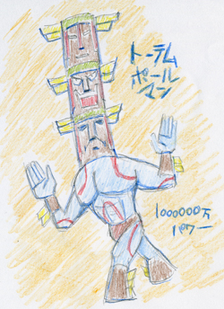
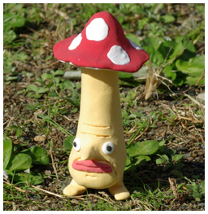

どうも、倉島です。
鍋の美味しい季節になりましたね。
さて、なにげなく募集が始まっているので、
お気付きでない方もいらっしゃるかもしれませんが、
現在〝ヘンナノ〟キャラクターデザイン大募集中なのであります。
べつに私が手をぬいて「も～ 飽きたので や～めたっ」とか、
勝手なことをぬかしているわけではありません。
あなたのフレッシュな才能を広く求めているわけです。
だからと言って私が腐りかけの才能かと言うと… もういいですか、この話。
デザインが一等賞に採用されると、なんとゲーム内で実際にアナタ様のキャラが登場！
画面せましと暴れまくるのでしょう。たぶん。
そして惜しくも一等を逃したアナタも、銀賞９９位までは
王様の美術館で、どだーんと展覧会に出品というメディアミックスな展開。
これはもう、応募するしかないですぞ！（だんだんキャラが分からなくなってきた）
私の場合、お仕事でヘンナノデザイン承っているものですから
残念ながら今回のコンテスト参加は自粛の方向性なのです。
あたりまえですかね。
でも私、昔からミーハーＢＯＹなもので、
なんとか放送局や、なんとか超人募集コンテストや、
なんとか桃子のラジオ番組へのイラスト投稿まで、
節操無く送りまくったものでした。
どう考えても恥ずかしい青春時代。
なにもかも皆、懐かしい…
でも、いいんです。
恥ずかしがっていちゃ何も始まりません。
旅の恥はかき捨てです。 …旅？
ちなみに私のとびっきりの恥部。
その昔、うんたら超人募集に応募した「トーテムポールマン」復刻版

もちろん、かすりもしませんでしたよ。
それでも、夢中で何かを追い続けたあの日々は忘れがたい尊い思い出
（そんなにいいもんじゃない）。
いっちょうアナタのパッションを私共にぶつけてみて下さい。
悪いようにはしません。
「王様物語」で絵画コンテスト！
～未確認生物〝ヘンナノ〟を描こう～
２００７年１２月２１日（水）消印分まで有効
締め切り間近！ お急ぎめされ！
世の中すっかり冬ですね。南の方はまだあったかいですか？
寒さに弱い皆葉英夫です。
一昨年に冬山が苦手な私は苗場スキー場に、人生生きていく中で努めて避けてきたものである「スキー」とやらに産まれて初めて行ったのですが、雪崩れが起きて「あわや」という事態だったことを思い出します。初めてのスキーで雪崩れに遭う漫画は良く見ますが、まさかそれが本当に起こるということを、この歳になって実感できました次第です。冬スポーツをやるなという神の思し召しかもしれません。
そんなわけで（何がそんなわけだ！？）冬は絵描きにとって厳しい季節。思ったように筆圧が入りません。エアコンの温度を上げろっていう話しかもしれませんが、昨今のエコロジー志向であるとか色々ですし、第一眠くなります。
そして今日も動きが鈍くなった手を脇で温めながら、あと残り作業わずか３体（キムPにダメ出しくらいました…シクシク）になった王様の仕事をしています。
ということは、多分出来上がりつつあるんだなということと、マメな男のキムPのメールのレスポンスが鈍くなっていることとがリンクして、このゲームの繁忙期が来ていることを実感させます。
だいたい経験観測上真っ先に作業の終わりが見えてくるパートは、まさに私がやっている２Dデザインであり、作業を終了すると追加デザインを待ちながら、パブリシティの仕事や、ゲーム中のグラフィックのお手伝いなどをしていきます。あとは随時他のパートも終わり出してくるので、最終的なデータをつなげていく繁忙期の実感に繋がるのです。
デバッグ＆テストプレイができる日を楽しみに待ってますよー！
開発の中心現場である遥か福岡から、今私のいる東京に向けて「熱」を感じて、冷えた指先が温まることを感じます。
以上、人間の冬眠について真剣に考えるの巻でした！
なんだか回ってくるのが早い気がしますが、
ごぶさたしています、倉島です。
もう今年も終わりですよ。
やたら早いですね。
年をとるごとに時が経つのが早まっている気がします。
長生きしたいものですね。
さて、今回は３Ｄデザインなお話。
前にも書きましたが、わたくしの場合
ずぅっと２Ｄのドット絵を自分でシコシコと描いていたもので、
人様に対して設定画やら指示書のようなものを出した経験が
ほとんどありません。
ただ今回の場合、デザインでの参加という立場に加えて、
フル３Ｄゲーム+開発現場がファーラウェイという全てが初体験なプロジェクト。
まさしくプロジェクト・ＯＨ！といった心境でした（しょうもないですか）
モデリングをしていただくにあたって、
キャラクター設定画の３面図を描き起こすわけですが、
なんせ頭ん中が２次元止まりな昭和の人間、不手際がとても多いのです。
自分の中ではツジツマが合っていても、
立体にすると矛盾がちょいちょい出てしまいます。
平気で〝ジョー〟の髪型のような
３次元に置き換え不可なデザインを上げては
おもいっきし矛盾点を指摘されてアタフタする私。
そして、なるべく複雑なデザインを避けつつある私。
これ以上、現場に迷惑かけるわけにはいかない…
いかん、いかんのだっ！
そんな時はリアルモデリング。
つまりは粘土細工。
つまり３Ｄソフトが使えません。
このような粘土具合でございす。

こんな単純なキノコの絵ぐらい三面図描けるだろっ！
という突っ込みごもっとも。
さすがにコレは先程作りました。
あんまり似ていません。
情報規制な関係もございまして、
まだまだ出せない奴等がごっちゃり居るわけです。
というわけで、こんな原型を作った後に
それを見ながら三面図を起こしたりしているのです。
意外にがんばっていますね 私。
とか何とか言いつつ、いつも御迷惑おかけしています。
現場の皆さん、ごめんなさい。
残り期間も共にがんばっていきまっしょい！（ややＣ調ぎみ）
日中はともかく朝晩はだいぶ冷え込むようになってきましたね。
つい最近、うちのカミさんが風邪をひいて寝込んでしまって
大変な思いをしながら何も出来ないロクでもない自分を
ヒシヒシと感じてる今日この頃、皆さんいかがお過ごしでしょうか。
開発に携わるみんなは、もうそれどころじゃねーっ！て感じで
またまた長ーい文章でも書きなぐろうかなと。
てなわけで、こんばんは。和田です。ウザイけどごめんね（ニコッ！
さてさて。
僕が何も出来ないっていうのは、
何も家庭の中に限ったことじゃなくて
ゲーム作りの現場においても同様なわけです。
んじゃぁお前はいったい何をやってんだという突っ込みは
星の彼方に置いてけぼりにして、ですね。
ここのところの『王様』開発事情は
実はというか案の定というか、結構苦戦しているっぽいです。
予定通りに行っているものもあれば、そうでないものも、だいぶありぃの。
今現在、スケジュールを見直してもらっている所です。
骨組みは整っていて大まかな所には問題が無いんだけど
物量をこなすこととかネタ（＝ギミック）の積み重ねとか
ディテール的に時間が足りないという感じですかね。
このブログでも何度も何度も書いていますが
無いところから作り出すって言うのはやっぱり大変というか
果てのない試行錯誤の繰り返しというか。
何しろ、これで良いというのは本質的には誰が言ってくれるわけでもないので
永遠に終わりがないようにも思えてくるんですよね。
それは各クリエイター自身の自問自答から始まるわけですが
当然それぞれのセクションのリーダーだったり
ディレクターやプロデューサーだったりが、自分のケツの穴を
擦り切れるほど拭く覚悟で「いい」というまで終わらないわけで。
一方で、かなりシリアスな、それでいてカッコ悪い話ではあるんですが
ゲームを作る人たちは職業的なクリエイターであって
純粋な芸術家ではありません。
それぞれが求道的に、良いものを面白いものをと心の奥底で思っている反面
プロフェッショナルとして、ビジネスに貢献しなければいけない
ジレンマを生来抱えているのです。
だからこそ、時間やお金が凄く大切です。
高度資本主義経済の中で細々と自己実現を模索して生きる
僕らには生き残ることが必要なのです。
生き残るということは、時間通りに物を作って送り出し
それでいて受けての人に喜ばれ
次のものを作るチャンスを得られるということです。
ぷはぁ、、、苦しい。
よく自分がビルゲイツだったらなあ、とか思います。
笑っちゃうけどホントの話で、そしたら思う存分納得行くまで
何にも気にせずダメだダメだ言えるなぁみたいな。
あっ、もちろん仕事じゃなくて、ですよ。
彼は多分、仕事の上でダメだダメだって本質的に言うことができたから
ああなれたと個人的には思ってます。
まあでも、そんなことは遊ぶ人には一切関係ないわけで。
作ってる人たちが、ノタれ死のうが何だろうが
とにかく目の前にあるゲームが面白いとか、お金を出した価値がある
みたいなことが遊ぶ人には重要で。
オ●ニーに付き合う義理は全くもって無い訳です、はい。
だいぶ何が言いたいんだか分からなくなってきていますが
つまりは『王様物語』の開発は今正念場を迎えているといったところです。
今切り直しているスケジュールは、最終最期のもの。
これを元に全ての人たちが動き出すもの。
そういった覚悟でいろいろと見極めたいなという決意表明ですね。
何に対するということは無くいろんなことに対して。
プロデューサーって、コンセプトの源泉だったりお金を引き出したり
するんですが、本質的にはとにかくケツを持つ人なんですね。
内外に対してプレッシャーもかけるけど、安心も与えなければいけない。
というわけで、『王様物語』では始めるだけ始めといて
現場的には、ほぼなーんにもやってない僕ですが、
そもそもエグゼクティブプロデューサーってそんなもんかよ！？みたいに
ちょっと拗ねたりしつつも、
なんとかみんなに安心して良いものを作ってもらったり
自信を持って売ってもらったり、はたまた期待して待っててもらったりと
そんなことの手伝いを出来ないかと、密かに企んでいたりするのです。
じゃないとねぇ、あれじゃないですか。
家庭でもできることが無く、仕事でもやることが無く、、、
あまりにも悲しかったり。笑うに笑えない。
なんてね。
そんなことを思いながらも日々元気に生きていますよ、僕は。
地味ぃにではありますが、出来ることを精一杯やっていきます、です。
だからみんなも、キムＰも。
がんばってね！（はあと←ミサトさん風←エヴァ熱再燃（恥））
みなさん、お元気ですか。キャラデザ担当の皆葉英夫です。
世の中には、たくさんの言語があります。英語、ロシア語、中国語、…古代の言葉を含めると実に様々な言語が様々な国で使用されています。
その中でも日本語というものは、とりわけ難しい言語で、一文字間違えてしまうだけでも、まるで別の言葉となってしまう恐ろしい言語なのではないでしょうか。
そこで今回はカタカナの「ヒ」について話してみたいと思います。
例えばあなたはオナラがしたくなったとしましょう。他人への注意を促すために
「あっ屁が出そう」と言うべきところを「ヒ」をひとつ付けるのを忘れてしまうだけで、「あっ尼が出そう」と言ってしまうことでしょう。
たった一文字の「ヒ」を忘れてしまっただけで、人間の排泄物は出家の道を辿ってしまうのです。いや、しかもそれだけでは、ありません。「わたくし尼になります。」を間違えて、「わたくし屁になります。」…と、言ってしまえば、それはもう自我の苦しみと絶望を味わうこととなってしまう。
いや、別にこんなクダラナイ話なのですが、以前このブログにて伝えることの難しさを切々と書いたのですが、最近もまた深く深くまさにワールドワイドな勢いで、伝えることを悩みつづける今日この頃なのです。
一撃で伝わる絵を求めて


 クリエイターズBLOG トップ
クリエイターズBLOG トップ